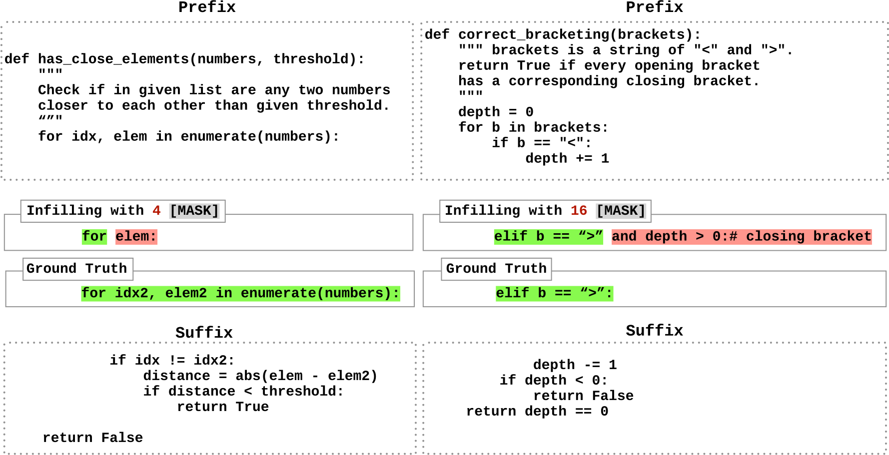
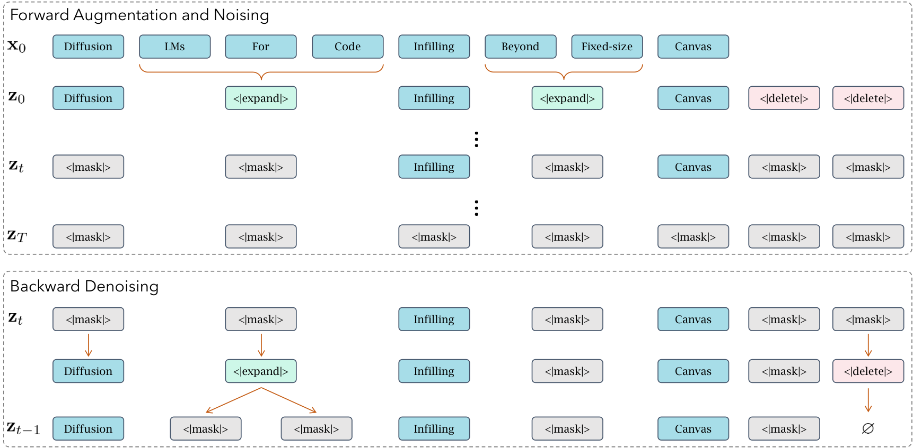
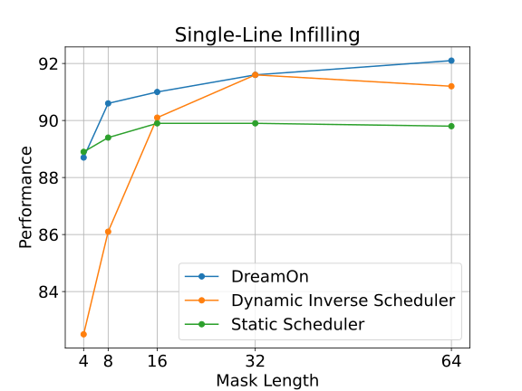
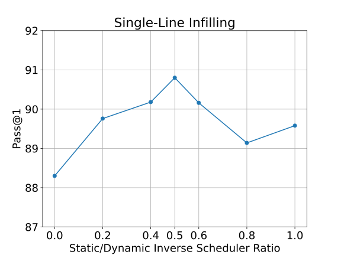
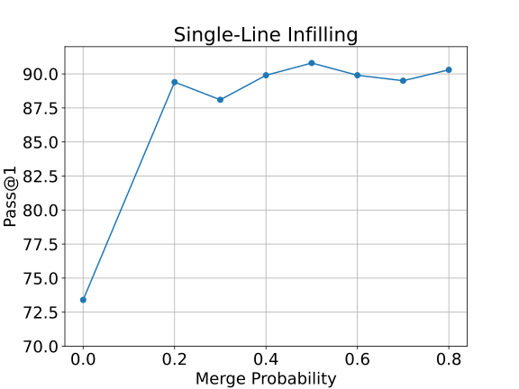
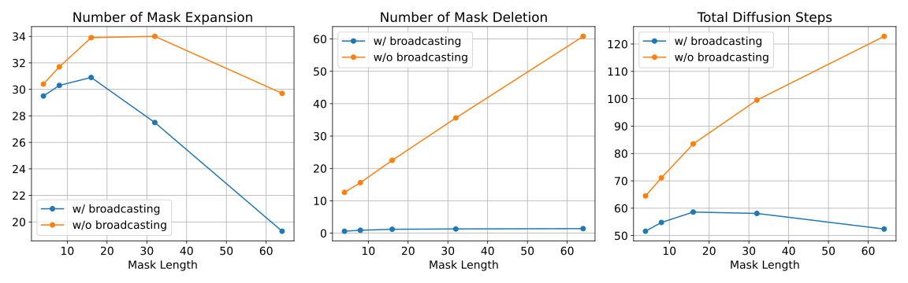
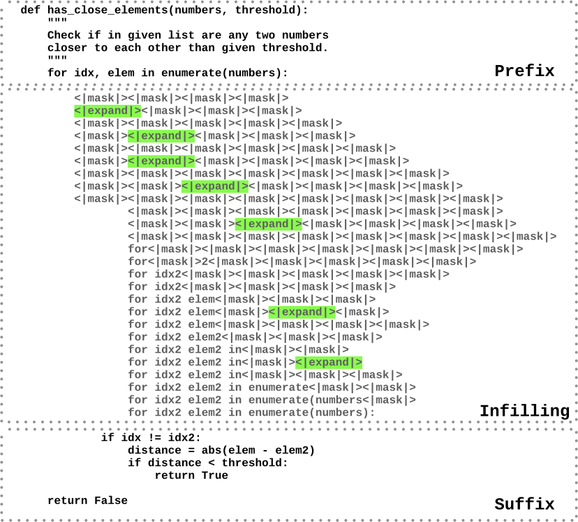
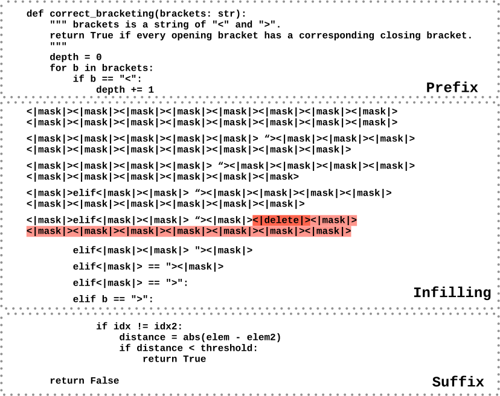

DreamOn：让扩散语言模型在代码填空时自己决定写多长
DreamOn: Diffusion Language Models For Code Infilling Beyond Fixed-size Canvas
阅读状态、进度与收藏只保存在你的浏览器里。本页依据 arXiv v1（2026-02-01，截至 2026-10-20 仍是唯一版本）、arXiv 上的 TeX 源文件和官方仓库 DreamLM/DreamOn 的代码。DreamOn 最早在 2025-07-15 以博客和模型权重的形式发布，论文版的主表口径与博客不同（见 §4.3）。
逐节精读
这部分按论文的章节顺序，用本站自己的话把整篇论文从头讲一遍。读懂某个概念需要的背景知识，会在第一次用到它之前单独讲清楚（青色框）。每个结论都尽量说出“因为什么、所以什么”。这篇论文以 CC BY 4.0 发布，所以页面里标“原文图”的是论文原图（未做修改）；标“示意图”或“简化图表”的是本站自己画的。标“推算”的数字是本站根据论文数据算出来的，标“读图”的数字是本站从原图的矢量坐标换算出来的约值，都不是论文原话。每节末尾有英文原文的链接。
0 导读：这篇论文解决什么问题
写代码时，最常见的需求往往不是“从头往下写”，而是“在中间补一段”：光标前面有代码，光标后面也有代码，要补上的是夹在中间、缺掉的那几行。这个任务叫代码填空（code infilling），也常叫 fill-in-the-middle，简称 FIM。主流的自回归（AR）代码模型只会从左往右写，为了做填空，它们要在预训练时把文本切开、调换顺序，学会“先看后文、再写中间”。
扩散语言模型（这里指掩码扩散模型）的生成方式不同：先在要写的地方放一排 [mask]，然后反复把其中一部分换成真正的 token，直到全部换完。每个位置在预测时都能同时看到左边和右边，所以它看起来天生就适合填空：把中间那段换成 [mask]，直接让模型去填即可。可是它有一个很硬的限制：[mask] 的个数必须在开始前定好，去噪过程中只能把某个位置的值从 [mask] 换成 token，不能增加或删除位置。论文把这排预先定好的位置叫作定长画布（fixed-size canvas）。于是填空之前，必须先猜中间那段有多长：猜短了写不下，猜长了模型会硬塞进多余的代码。论文测得，Dream-Coder-7B 在 HumanEval-Infilling 单行题上，若告诉它真实长度，pass@1 是 93.3；若用 4、8、16、32、64 这五种固定长度，平均只有 55.3，差了 38 个百分点。
DreamOn 的做法很直接：在词表里加两个特殊状态 [expand] 和 [delete]。去噪时，一个 [mask] 如果被预测成 [expand]，就原地变成两个 [mask]，画布长一格；如果被预测成 [delete]，就从序列里删掉，画布短一格。训练时，作者用数据增强造出含这两种目标的样本：把相邻的几个掩码位置合并成一个 [expand]，并在中间段末尾追加随机个数的 [delete]。损失仍是普通掩码扩散的交叉熵，网络结构一点不改。在 Dream-Coder-7B 上，只用约 11 万条代码数据、8 张 H800 训练约 5 小时。
结果上，三个 7B 扩散模型加上 DreamOn 后，主表的九个分数平均提高了约 26 个百分点；DreamCoder-7B + DreamOn 在单行、多行、SantaCoder-FIM 上得到 92.1、63.8、79.0，与 AR 模型 Qwen2.5-Coder-7B 的 92.6、58.7、79.8 相当，多行还更高。更重要的是，不论一开始给 4 个还是 64 个 [mask]，它的单行分数都稳定在 88.7 到 92.1 之间，几乎不再依赖长度猜得准不准。不过，这些比较里有不少变量没有对齐，例如 AR 基线没有用同一份填空数据微调、扩散模型每步只解码一个 token；§4.4 会逐条讲清楚。
读完这部分，你应该能回答这几个问题：
- AR 模型是怎么做代码填空的，为什么它不用操心长度？
- 掩码扩散为什么必须预先定好画布长度，猜错了具体会出什么问题？
- [expand] 和 [delete] 的训练目标是怎么造出来的，[delete] 的损失为什么要降权？
- 推理时画布怎样一步步变长、变短，“删除广播”省掉了什么？
- 主表里“追平 AR 模型”是在什么条件下成立的，哪些变量没有对齐？
- 和 Edit Flows 等其他变长方法相比，DreamOn 做了什么取舍？
1 引言：扩散模型天生适合填空，却被画布长度卡住
AR 模型从左往右一个一个地生成 token，每个 token 只能看到它前面的内容。填空时，要补的中间段后面还有一截代码（后缀），按正常顺序生成中间段时，模型根本看不到后缀，自然写不出和后缀衔接的代码。
OpenAI 在 2022 年提出的 FIM 训练法（Bavarian et al.）绕开了这个问题：预训练时，随机把一部分文档切成“前缀、中间、后缀”三段，再用几个特殊的哨兵 token 把顺序改成“〈前缀标记〉前缀〈后缀标记〉后缀〈中间标记〉中间〈结束〉”。这样，中间段被挪到了最后，模型生成中间段时，前缀和后缀都已经在它前面了。推理时，把“〈前缀标记〉前缀〈后缀标记〉后缀〈中间标记〉”喂给模型，让它一直写，直到写出〈结束〉为止。
注意这里的长度是怎么决定的：模型觉得中间段写完了，就输出结束标记，生成自然停止。所以 AR 模型做填空时不需要预先知道答案有多长。代价是训练和推理都要用这套专门的格式，文本的天然顺序也被打乱了。今天的主流代码模型，包括 Codex、InCoder、SantaCoder、StarCoder、Code Llama、DeepSeek-Coder、Qwen2.5-Coder、Seed-Coder，都用了这种做法。
掩码扩散模型把一段文本看成一排固定的“格子”。生成时，先把要写的格子全部设成 [mask]；每一步，模型同时为所有 [mask] 格子预测一个分布，挑出其中最有把握的几个格子，把它们换成具体的 token；然后重复，直到没有 [mask] 为止。模型内部用的是双向注意力，每个格子都能看到左右两边的所有内容。
用来填空时，做法非常自然：输入“前缀 + \(L\) 个 [mask] + 后缀”，模型一边看前缀、一边看后缀，把中间的格子填满。不需要调换顺序，也不需要专门的哨兵 token。
问题在于“格子”是固定的。去噪的每一步只是把某个格子里的值从 [mask] 换成 token，格子的个数和位置从头到尾不变。没有“在这里插入一个格子”或“把这个格子去掉”的操作。所以 \(L\) 必须在生成开始前就定下来，这就是“定长画布”。
现有的扩散模型对付长度的办法是填充：LLaDA、Dream-Coder 等模型在指令微调时，会在较短回答的末尾补上结束符或 [PAD]，让模型学会“写完了就用填充符占满剩下的格子”。这在“回答写在序列最后”的场景里还算有效，但在填空里不太管用：多出来的格子夹在中间段和后缀之间，而模型在训练中很少见过“填充符后面还跟着代码”的情况，于是倾向于把所有格子都填上代码（这是本站对原文图 1 右边那种失败的解释，论文没有专门分析）。反过来，如果格子给少了，填充也帮不上忙，模型只能把一段完整的代码挤进几个格子里。

for idx2, elem2 in enumerate(numbers): 根本放不下，模型只好写出一个残缺的 for elem:。右边给了 16 个 [mask]，标准答案 elif b == ">": 用不了这么多格子，模型却把格子填满，多写出一个 and depth > 0 的条件，而这个多余的条件让函数在遇到多余的右括号时不再减计数，结果出错。这张图说明，同一个模型在两个方向上都会因为长度不匹配而失败。论文用一个数字概括了这个问题的严重程度：在 HumanEval-Infilling 的单行题上，Dream-Coder-7B 给定真实长度时 pass@1 为 93.3，而在 4 到 64 五种固定长度下平均为 55.3，差 38.0 个百分点（数字来自后文表 2）。换句话说，模型本身其实会写这一行代码，它输在了“格子数”这个超参数上。而在真实的编辑器里，没有人会告诉模型“这里要补 23 个 token”，所以这个超参数在实际使用中根本无法调准：评测时给定真实长度的 93.3，只是一个用不上的理想值。
基于这个观察，论文提出 DreamOn，并列出三点贡献。第一，用两个特殊状态让扩散模型在生成中扩展或收缩序列，不改模型结构。第二，这两个状态的学习只需要对训练数据做简单的增强，训练目标和标准扩散目标几乎一样，因此可以在已有的扩散模型上直接微调。第三，在多个填空评测上，DreamOn 让扩散模型比原来平均高出 26.4 个百分点，接近“给定真实长度”时的表现，也接近或达到最好的同规模 AR 模型。
- 论文写的“下降 38%”和“提升 26.4%”都是百分点（pass@1 或 EM 的绝对差），不是相对比例。38 来自表 2 单行题：93.3 − 55.3 = 38.0；26.4 是表 1 中九个“+ DreamOn”增量的平均（本站按表中数字重算是 238.2 ÷ 9 ≈ 26.5，差别来自舍入）。
- 本文的“填空”指前缀和后缀都给定、只补中间一段，和 IDE 里常见的“光标处往后续写”不同。后者对 AR 模型没有任何难度，也不是这篇论文的评测对象。
2 预备知识：DreamOn 建立在什么样的掩码扩散模型上
设一段数据有 \(N\) 个 token，记作 \(\mathbf{x}_0=[\mathbf{x}_0^1,\dots,\mathbf{x}_0^N]\)，词表里有 \(V\) 个普通 token，外加一个特殊的 [mask]。前向过程负责“加噪”：给定一个时间 \(t\in[0,1]\)，每个 token 以概率 \(\alpha_t\) 保持原样，以概率 \(1-\alpha_t\) 被换成 [mask]。\(\alpha_t\) 随 \(t\) 从 1 降到 0，所以 \(t=0\) 时一个 [mask] 都没有，\(t=1\) 时全是 [mask]。被换成 [mask] 之后就不会再变回来，所以 [mask] 也叫“吸收态”。
反向过程由神经网络完成：看着部分被遮住的序列 \(\mathbf{x}_t\)，预测每个 [mask] 位置原来是什么 token。训练损失就是在被遮住的位置上做交叉熵：
式子里的指示函数 \(\mathbf{1}_{[\cdot]}\) 表示只在被遮住的位置算损失；\(w(t)\) 是一个随噪声水平变化的权重。“连续时间”的意思是 \(t\) 从 \([0,1]\) 上均匀抽取，而不是只取有限的 \(T\) 个离散步，这样训练时不必事先规定去噪要分几步。当 \(w(t)\) 取由 \(\alpha_t\) 推出的特定形式时，这个损失是负对数似然的一个上界（即 ELBO 的相反数），细节见 MDLM 精读页。
DreamOn 用到的三个基座模型都是用这套目标训练的，而且都不是从零开始，而是从 AR 模型“改造”来的：
- Dream-7B：从通用 AR 模型 Qwen2.5-7B 出发，用约 5,800 亿 token 继续训练成扩散模型（见 Dream 精读页）。
- DiffuCoder-7B：从 AR 代码模型 Qwen2.5-Coder-7B 出发，用约 1,300 亿 token 改造（见 DiffuCoder 精读页）。
- Dream-Coder-7B（论文表里也写作 DreamCoder-7B）：同样从 Qwen2.5-Coder-7B 出发，用约 3,220 亿公开 token 改造，再做指令微调和强化学习（见 Dream-Coder 精读页）。它和 DreamOn 是同一个团队的工作，2025-07-15 与 DreamOn 的权重一同发布。
这三个数字来自各自的论文，不是 DreamOn 论文给出的。要记住的是：后两个扩散模型的起点 Qwen2.5-Coder-7B，正是表 1 里拿来对比的 AR 基线之一。这一点在 §4.4 讨论“和 AR 比得公不公平”时会用到。
AR 模型在第 \(i-1\) 个位置的输出，预测的是第 \(i\) 个 token。Dream 系列在改造时保留了这个习惯：要预测第 \(i\) 个格子是什么，读的是第 \(i-1\) 个位置的输出（论文里叫 shift 参数化）。这样，AR 模型原来的输出层几乎不用改就能接着用，改造更省数据。DreamOn 的官方代码也沿用了这个错位：训练和推理都把输出向右挪一格再和目标对齐。这对理解方法没有影响，只是读代码时要知道。
英文原文 §2 ↗ · 相关：MDLM 结构拆解 · Dream 结构拆解
3 方法：给掩码扩散加上“变长”和“变短”两个状态
3.1 两个新状态：[expand] 与 [delete]
DreamOn 在词表里加入两个特殊状态，它们只在去噪过程中出现，规则很简单：
- [expand]：某个 [mask] 被预测为 [expand] 时，它在原地变成两个 [mask]。序列因此变长一格，模型下一步就有更多的格子可写。
- [delete]：某个 [mask] 被预测为 [delete] 时，这个格子直接从序列里删掉。序列因此变短一格，后面的内容整体向前挪。
这两个状态在前向加噪里的处理也很简单：不论什么噪声水平，它们一律被遮成 [mask]。这意味着模型的输入里永远不会出现 [expand] 或 [delete]，它们只会作为“要预测的答案”出现。这样设计的好处是，模型输入的格式和原来的扩散模型完全一样，只有输出端多了两个可选的类别，所以不需要改网络结构，只需要在词表里多两个 token。

3.2 训练样本怎么造：从 \(\mathbf{x}_0\) 构造 \(\mathbf{z}_0\)
训练的难点在于：真实数据里没有 [expand] 和 [delete]，模型无从学起。DreamOn 的办法是人为地造一份“增强序列” \(\mathbf{z}_0\)，让它包含这两种状态，然后在 \(\mathbf{z}_0\) 上做普通的掩码扩散训练。构造分两件事。
第一件：造 [expand]。先按普通扩散的方式抽一个时间 \(t\sim\mathcal{U}(0,1)\)，按 \(\alpha_t\) 决定哪些位置要被遮住，记作集合 \(\mathcal{M}_t\)。然后只在 \(\mathcal{M}_t\) 内部找“连续相邻的被遮位置”，以一定概率把它们合并成一个格子，这个格子的预测目标是 [expand]。这样做有两层用意。其一，合并只发生在本来就要被遮住的地方，所以被合并掉的 token 本来也看不见，不会额外破坏模型能看到的上下文。其二，合并的多少跟着噪声水平走：\(t\) 越大、遮得越多，能合并的相邻位置越多，扩展目标也就越多；这样样本里“特殊状态”和“普通 token”的比例更均衡。
合并的概率由“合并调度器”决定，论文设计了两种：
- 静态调度器：每一对相邻的被遮位置，都以固定概率 \(p_{\text{merge}}=0.5\) 合并。
- 动态反比调度器：被遮的位置越多，合并概率越低。官方代码里的具体形式是 \(p=p_{\text{merge}}\times(1-\text{被遮比例})\)。作者的理由是：遮得多的时候如果还大量合并，很多普通 token 的预测目标会被 [expand] 取代，模型做普通填字的能力可能受损。
训练时两种调度器各用一半（官方代码里每条样本以 0.5 的概率选静态，否则选动态反比）。§5.2 会看到，只用其中一种都有明显短板。
第二件：造 [delete]。做法更简单：在要扩散的中间段末尾追加随机个数的 [delete]，论文写的是 0 到 64 个。作者发现，对填空任务来说，只在末尾追加就足以学会收缩。这个选择有一个直接后果：模型学到的 [delete] 含义是“中间段的内容到这里已经写完，后面的格子都是多余的”。§3.5 的删除广播正是利用了这一点。
有了 \(\mathbf{z}_0\)，剩下的就是普通的掩码扩散：在 \(\mathbf{z}_0\) 上加噪得到 \(\mathbf{z}_t\)，让模型在每个 [mask] 位置预测 \(\mathbf{z}_0\) 里对应的内容。预测目标因此自然包含了三类：普通 token、[expand]、[delete]。模型学会的是：“这个格子应该写什么字”“这里格子不够、需要再分出一格”“这个格子是多余的”。
3.3 训练损失：为什么要给 [delete] 降权
把 [expand] 和 [delete] 当成两个普通的词表项，直接用 §2 的损失训练，会碰到一个不平衡：每个多余的格子各对应一个 [delete] 目标，而 [expand] 是把两个或更多 token 合成一个目标，数量少得多。末尾一次最多可追加 64 个 [delete]，于是在很多样本里，[delete] 目标的个数远多于其他目标，损失被它们主导。结果是模型倾向于过度预测删除，把本该写代码的格子也删掉。
DreamOn 的修正是给每个被遮位置 \(n\) 乘一个权重 \(w_n\)：
这里 \(\mathcal{N}_{\text{mask}}\) 是序列里 [mask] 的总数，\(\mathcal{N}_{\text{delete}}\) 是其中目标为 [delete] 的个数。这个权重做了两件事。第一，后面的分段函数让所有 [delete] 目标加起来只算一个普通 token 的分量：每个 [delete] 的权重是 \(1/\mathcal{N}_{\text{delete}}\)，\(\mathcal{N}_{\text{delete}}\) 个加起来正好是 1。第二，前面的系数负责把总量拉回原来的大小：把所有权重加起来，
正好等于不加权时的权重总和 \(\mathcal{N}_{\text{mask}}\)（推算）。所以这个权重不改变损失的整体量级，只是在 [delete] 和其他目标之间重新分配。这就是论文说的“不论一条样本里有多少个删除，损失的量级保持一致”。
| 每个位置的权重 | 这一类的权重合计 | 占全部损失权重的比例 | |
|---|---|---|---|
| 不加权：10 个普通 / [expand] 目标 | 1 | 10 | 25% |
| 不加权：30 个 [delete] 目标 | 1 | 30 | 75% |
| DreamOn：10 个普通 / [expand] 目标 | 40 ÷ 11 ≈ 3.64 | ≈ 36.4 | ≈ 91% |
| DreamOn：30 个 [delete] 目标 | 3.64 ÷ 30 ≈ 0.12 | ≈ 3.64 | ≈ 9% |
3.4 推理：画布怎样一步步变长变短
模型在每个 [mask] 位置给出一个词表上的概率分布。熵衡量这个分布有多“分散”：如果几乎所有概率都压在一个 token 上（比如 95% 是 “for”），熵很低，说明模型很确定；如果概率平摊在几十个 token 上，熵很高，说明模型拿不准。所以“按熵挑位置”就是先写模型最有把握的格子，把拿不准的留到后面，等周围的格子写好、线索更多时再写。注意，[expand] 和 [delete] 也是词表里的选项，模型可能非常确定“这个格子是多余的”，那么这个格子就会被优先选中并删掉。
选中位置之后，要从分布里抽一个具体的 token。温度 \(\tau\) 把分布变尖或变平：\(\tau\) 小于 1 时高概率的 token 更占优势，\(\tau=0.2\) 已经接近“总取最可能的那个”。top-p 只保留累计概率达到 \(p\) 的那一小撮最可能的 token，再从中抽样，\(p=0.9\) 意味着把尾部 10% 的低概率选项直接去掉。两者合用，既保留一点随机性，又基本不会抽到离谱的 token。
推理流程（论文算法 2）在普通的掩码扩散去噪上只改了三处。先说它从哪里继承：Dream 的默认解码是，每一步对所有 [mask] 位置同时预测，然后按熵挑出最有把握的几个位置确定下来（预测分布的熵越低，说明模型越确定），其余位置留到下一步。Dream 原来还用一个“调度器”，根据预先给定的总步数和画布长度，算出每一步该确定多少个位置，前提是长度事先知道。DreamOn 的长度在变，所以第一处改动是：改为直接规定每一步确定 \(n\) 个位置。官方代码和 README 都表明，实验里 \(n=1\)，也就是每次前向只确定一个格子。
第二处改动是执行新状态：被选中的位置如果采样出 [expand]，就原地换成两个 [mask]；采样出 [delete]，就把它删掉；采样出普通 token，就照常写入。长度变了之后，所有位置的编号要重新排一遍，再进入下一步。第三处改动是设一个长度上限 \(L_{\max}\)：当序列长度达到上限时，把 [expand] 的概率置为 0 再重新归一化，防止序列无限增长。整个过程在没有 [mask] 时结束。
采样设置方面，论文用温度 0.2、top-p 0.9，\(L_{\max}=128\)，并在扩展次数达到上限后关闭扩展。
题目（本站自拟）：前缀 def area(w, h):，后缀 return s，中间应填 s = w * h，共 5 个 token。每一步只确定 1 个格子（\(n=1\)），每行左边的标签写明这是第几步（带圈数字）、这一步对哪个格子做了什么，右边是做完之后的画布。
从这个例子能看出一个规律，后面分析效率时会用到：因为每一步只处理一个格子，而这个格子要么变成一个 token，要么扩展，要么删除，所以总步数 ≈ 最终 token 数 + 扩展次数 + 删除步数。画布起点离真实长度越远，额外的扩展步或删除步就越多。
3.5 删除广播：把“一格一格删”变成“一次删到底”
作者在实践中发现，当初始画布比真实长度长很多时，模型要花大量的前向计算一格一格地删掉多余的 [mask]，效率很低，效果也略差。于是加了一个不需要训练的推理技巧：每当模型预测出一个 [delete]，如果它右边的格子都还是 [mask]，就把这些格子全部删掉。
这个技巧之所以合理，是因为训练时 [delete] 只被追加在中间段末尾（§3.2）。模型学到的 [delete] 含义因此是“内容到此为止，后面都是多余的”。既然如此，一旦它在某处预测出 [delete]，而右边又还没有写下任何内容，那么右边的格子按模型自己的判断都是多余的，没必要一个一个再问一遍。这相当于把删除从“逐个 token 的操作”变成了“预测一次长度”。§5.4 会看到，在初始 64 格时，它把多行题的平均总步数从 122.8 降到 52.4。
- 代码里的 [delete] 直接复用模型原有的结束符（EOS）：训练时在中间段末尾追加的是若干个结束符，推理时把中间段里新出现的结束符删除。[expand] 对应词表里的 id 151667。
- 每步只确定 1 个格子（评测代码里写死
number_transfer_tokens = 1）；每一步都按当前实际长度重新计算注意力掩码和位置编号，没有 KV 缓存。 - 删除广播的实现是：中间段一旦出现第一个结束符，就把它右边所有仍是 [mask] 的格子也设为结束符，再一起删掉；右边已经写下的 token 保持不动。论文的描述是“右边全是 [mask] 时才删”，两者在常见情况下等价。
- 公开的评测脚本设
max_gen_len=64，即中间段最长 64 个 token、扩展次数上限 64；论文写的是 \(L_{\max}=128\)。按脚本，初始给 64 个 [mask] 时已没有扩展余地。训练脚本设total_epochs=5，论文写的是 10 个 epoch。论文的数字是否用了与公开脚本不同的设置，本站无法核实。
- DreamOn 只能对还是 [mask] 的格子做扩展或删除。一个格子一旦写下普通 token，就和原来的掩码扩散一样，再也不会被改写或删除。所以它解决的是“格子数不对”，不是“写错了能改”。
- [expand] 永远只裂成两个 [mask]。答案比画布长很多时，需要连续扩展很多次，每次扩展都要一次完整的前向计算。论文在局限部分也承认这一点。
- 整个构造是启发式的：增强序列 \(\mathbf{z}_0\) 怎么造（合并概率、删除只放在末尾）是人为规定的，模型并没有学习“从 \(\mathbf{z}_0\) 还原 \(\mathbf{x}_0\)”这一步，所以这个损失不是原始文本的似然上界，也不能用来报告困惑度。论文结论部分自己也称其依赖启发式。
4 实验：在三个 7B 扩散模型上加 DreamOn，和 AR 代码模型比填空
4.1 训练设置：11 万条数据、约 5 小时
作者在三个基座上分别微调：Dream-7B、DiffuCoder-7B 和 DreamCoder-7B。训练数据是 OpenCoder 指令数据第二阶段里的“教育类指令”子集，约 11 万条 Python 题目与解答，由高质量的教学类种子数据合成而来。每条解答被随机切成前缀、中间、后缀三段；题目说明、前缀和后缀作为固定的上下文，只在中间段上做扩散。官方数据代码显示，切分是按行进行的：从代码块里随机取连续的若干行作为中间段，并尽量避开含有 def 的行；题目加解答超过 1,024 个 token 的样本被丢掉，另留 1,000 条做验证。
增强的超参数在 §3.2 讲过：每条中间段末尾追加 0 到 64 个 [delete]，合并概率 \(p_{\text{merge}}=0.5\)，静态与动态反比调度器 1 : 1 混用。优化方面，训练 10 个 epoch，批大小 128，最大上下文 1,024，学习率 \(10^{-5}\)，余弦衰减并用前 10% 的步数预热。8 张 H800 大约训练 5 小时。论文说这相当于预训练一个基座模型所需算力的 0.15%。按这些数字推算，10 个 epoch 一共处理约 110 万条样本，约 8,600 个优化步，处理的 token 位置不超过 11 亿个；而 Dream-Coder 的改造阶段用了约 3,220 亿 token，两者差两个多数量级（推算）。
4.2 评测：三个填空基准、两类对手
pass@1：对每道题生成一个答案，把它填回原程序，运行这道题自带的单元测试，测试全部通过算对。它衡量的是“功能对不对”，写法和标准答案不同也没关系。精确匹配（EM）：把生成的一行代码和标准答案逐字比较，完全一样才算对。它更严格：变量换个名字、多一个空格（取决于是否做规范化）都算错，所以分数通常更依赖“写法是否和答案一致”。
举原文图 1 右边那道题为例：标准答案是 elif b == ">":。如果模型写成 elif ">" == b:，单元测试照样通过，pass@1 算对，但逐字比较不同，精确匹配算错。反过来，原文图 1 里多写了 and depth > 0 的答案，两种指标下都算错。
| 基准 | 怎么构造的 | 题数 | 指标 | 标准答案长度（本站统计） |
|---|---|---|---|---|
| HumanEval-Infilling 单行 | 从 HumanEval 164 道题的标准解答中挖掉一行 | 1,033 | pass@1 | 平均 28.5 个字符，中位数 24，最长 141 |
| HumanEval-Infilling 多行 | 挖掉连续的若干行 | 5,815 | pass@1 | 平均 145 个字符、5.4 行；中位数 106 个字符；最长 859 个字符、29 行 |
| SantaCoder-FIM（Python 子集） | 同样基于 HumanEval 题目，从解答程序中挖掉一行 | 1,043 | 精确匹配 | （未统计） |
题数与长度由本站根据官方数据文件（openai/human-eval-infilling 与 Hugging Face 上的 bigcode/santacoder-fim-task）统计，论文没有给出。长度表说明了为什么固定画布难选：单行题的答案大多只有十几到几十个字符，而多行题从一行到二十多行都有，任何一个固定的格子数都会对一部分题偏长、对另一部分题偏短。
对手分两类。AR 模型：DeepSeek-Coder-6.7B、Qwen2.5-Coder-7B、Seed-Coder-8B，三者在预训练中都用了 FIM 目标，评测时用各自预训练时的 FIM 模板。扩散模型：LLaDA-8B、Dream-7B、DiffuCoder-7B、DreamCoder-7B，都是同规模的开源权重模型。HumanEval-Infilling 报告 pass@1，SantaCoder-FIM 报告精确匹配，都用官方评测脚本。所有扩散模型默认给 64 个 [mask]；DreamOn 的变体同样从 64 个起步，再自己调整。
4.3 主结果（论文表 1）
| 模型 | 单行 pass@1 | 多行 pass@1 | SantaCoder EM |
|---|---|---|---|
| AR 模型（预训练含 FIM） | |||
| DeepSeek-Coder-6.7B | 73.0 | 45.7 | 76.3 |
| Seed-Coder-8B | 89.7 | 59.3 | 77.2 |
| Qwen2.5-Coder-7B | 92.6 | 58.7 | 79.8 |
| 扩散模型（定长 64 个 [mask]） | |||
| LLaDA-8B | 48.3 | 21.1 | 35.1 |
| Dream-7B | 48.2 | 21.9 | 60.3 |
| + DreamOn | 88.6（+40.4） | 53.3（+31.4） | 73.8（+13.5） |
| DiffuCoder-7B | 53.7 | 45.0 | 58.0 |
| + DreamOn | 92.2（+38.5） | 63.1（+18.1） | 77.4（+19.4） |
| DreamCoder-7B | 55.5 | 43.2 | 59.3 |
| + DreamOn | 92.1（+36.6） | 63.8（+20.6） | 79.0（+19.7） |
表 1 可以分三层读。第一层，不加 DreamOn 时，所有扩散模型都远远落后于 AR 模型：单行题上它们在 48 到 56 之间，而 AR 模型在 73 到 93 之间；多行题差距同样大。作者把这归因于定长生成，§5.1 的表 2 会给出直接证据。第二层，三个基座加上 DreamOn 后都大幅提升，连没有专门训练过代码的通用模型 Dream-7B 也从 48.2 升到 88.6，说明这个机制和具体基座无关，作者称之为“与模型无关的增强”。第三层，两个代码扩散模型加上 DreamOn 后，单行题（92.2、92.1）与 Qwen2.5-Coder-7B（92.6）相差不到 1 个点，多行题（63.1、63.8）高于 Qwen2.5-Coder-7B（58.7）和 Seed-Coder-8B（59.3），SantaCoder 上（77.4、79.0）与 AR 模型（76.3 到 79.8）相当。
需要说明的是，2025-07 的博客版本报告的是扩散模型在 4、8、16、32、64 五种初始长度下的平均分；论文版改成了统一用 64 个 [mask]。两种口径下“加 DreamOn 后大幅提升”的结论相同，但具体数字不同，引用时要注明出处。
4.4 结果的份量：这些数字是在什么条件下得到的
“扩散模型加上 DreamOn 追平甚至超过 AR 代码模型”是一个很吸引人的结论。下面逐条看这个比较里哪些条件是对齐的，哪些没有。
- 和 AR 模型比：参数对齐，训练量和训练任务没有对齐。双方都在 7B 左右（6.7B 到 8B）。但 DiffuCoder-7B 和 DreamCoder-7B 的起点就是 Qwen2.5-Coder-7B（据 Qwen2.5-Coder 技术报告，它用 5.5 万亿 token 训练，其中包含 FIM 目标），之后又分别用约 1,300 亿、3,220 亿 token 改造成扩散模型，再加上 DreamOn 在 11 万条填空格式数据上的微调。论文没有提到对 AR 基线做过任何额外微调，它们没有见过这 11 万条数据。所以“多行题 63.8 对 58.7”比较的，其实是“Qwen2.5-Coder + 几千亿 token 改造 + 专门的填空微调”和“Qwen2.5-Coder 原版”。论文没有给出“Qwen2.5-Coder-7B 用同一份数据做 FIM 微调”的对照，也没有写明 AR 模型的解码设置（贪心还是采样、温度多少）。
- 和原扩散模型比：“+ DreamOn”里混着两件事。一是在填空格式的数据上微调，二是获得长度控制。原模型没有在这份数据上微调过。表 2 的 w/o Delete、w/o Expand 两个变体做了同样的微调，可以拆开一部分（§5.1）；但论文没有报告“同样微调、两种状态都不加”的版本，所以单纯做填空微调本身能涨多少，从论文里看不出来。附录里只有 ROCStories 实验给了同数据微调的基线（§6）。
- 初始长度定为 64，对谁有利。对 Dream-Coder 原模型来说（表 2 只给了它在各长度下的分数），64 在多行题和 SantaCoder 上恰好是它表现最好的长度，在单行题上不是（16 个时最高，72.6）。而在 64 这个长度上，只会删除、不会扩展的 w/o Expand 变体已经得到 91.5、61.3、78.0，和完整 DreamOn 的 92.1、63.8、79.0 相差都在 3 个点以内。也就是说，表 1 里的提升大部分来自“学会删掉多余的格子”（以及微调本身），扩展机制主要在初始画布偏短时起作用（本站据表 2 的解读）。
- 步数与速度：每步只写一个 token，没有任何墙钟时间。官方实现每次前向只确定 1 个格子，所以 DreamOn 没有用到扩散模型“并行解码”的优势；多行题从 64 格起步时平均要 52.4 次前向（§5.4），其中约 32 次是在写 token（读图推算）。每次前向都对整个序列重新计算，没有 KV 缓存。论文没有报告硬件、批大小、延迟或吞吐，也没有和 AR 模型比速度。“删除广播加速 2.1 倍”指的是步数，论文没说是在哪个初始长度、哪个子集上算的；从图 4 读出的多行题步数之比在 1.25 倍（4 格起步）到 2.34 倍（64 格起步）之间（读图推算）。
- 基准的性质。填空正是需要同时利用前后文的任务，这是最有利于扩散模型的场景，不能推广到普通的代码生成。三个基准都建立在同一批 164 道 HumanEval 题目上，各题之间高度相关，实际的“独立题目数”远少于表面上的几千个。SantaCoder 用精确匹配，写法不同但功能正确的答案也算错。
- 随机性。扩散模型用温度 0.2、top-p 0.9 采样，论文没写每题采样几次，也没报告多次运行的波动。单行题上 92.1、92.2、92.6 之间的差不到 1 个点，在没有方差的情况下不宜区分高下。
- “达到 oracle 水平”只在单行题上成立。单行题上 DreamOn 在各初始长度下为 88.7 到 92.1，确实接近原模型给真实长度时的 93.3。多行题上 DreamOn 最好是 63.8，比原模型给真实长度时的 69.0 低 5.2 个点；SantaCoder 上最好是 79.0，比 DreamOn 自己给真实长度时的 82.0 低 3.0 个点。
英文原文 §4 ↗ · 原文表 1 ↗ · 相关：Dream-Coder 精读页 · DiffuCoder 精读页
5 分析：扩展、删除各自管什么，设计细节有多重要
5.1 不同初始长度下的表现（论文表 2）
| 模型 | 4 | 8 | 16 | 32 | 64 | 平均 | oracle |
|---|---|---|---|---|---|---|---|
| HumanEval-Infilling 单行（pass@1） | |||||||
| Dream-Coder-7B | 24.9 | 61.2 | 72.6 | 62.4 | 55.5 | 55.3 | 93.3 |
| + DreamOn | 88.7 | 90.6 | 91.0 | 91.6 | 92.1 | 90.8 | 91.6 |
| w/o Delete | 87.8 | 77.9 | 71.2 | 62.3 | 37.8 | 67.4 | 93.3 |
| w/o Expand | 25.1 | 71.6 | 88.0 | 90.9 | 91.5 | 73.4 | 92.5 |
| HumanEval-Infilling 多行（pass@1） | |||||||
| Dream-Coder-7B | 5.5 | 14.7 | 27.1 | 39.4 | 43.2 | 26.0 | 69.0 |
| + DreamOn | 50.2 | 53.8 | 56.9 | 60.9 | 63.8 | 57.1 | 66.6 |
| w/o Delete | 44.6 | 45.3 | 46.1 | 46.7 | 44.7 | 45.5 | 67.9 |
| w/o Expand | 5.5 | 16.5 | 30.7 | 48.2 | 61.3 | 32.4 | 63.2 |
| SantaCoder-FIM（EM） | |||||||
| Dream-Coder-7B | 20.0 | 26.6 | 43.5 | 50.8 | 59.3 | 40.0 | 76.3† |
| + DreamOn | 75.0 | 76.8 | 78.4 | 78.0 | 79.0 | 77.4 | 82.0 |
| w/o Delete | 74.2 | 44.3 | 40.2 | 50.0 | 56.2 | 53.0 | 84.2 |
| w/o Expand | 22.5 | 55.0 | 74.7 | 77.8 | 78.0 | 61.6 | 78.6† |
表头的 4 到 64 是初始 [mask] 个数；“oracle”是给定真实长度、关闭扩展和删除时的分数。† 表示这两个数是先用语法树解析器规范化写法、再做精确匹配得到的，比普通精确匹配宽松，不能和同列其他数字直接比。“w/o Delete / w/o Expand”在训练中去掉了相应的增强，所以推理时也不会预测该状态（据 2025-07 博客的说明）。
先看原模型（灰线）。单行题上，给 4 个格子时只有 24.9，因为大多数单行答案根本放不下；格子增加到 16 个时升到 72.6；再往上反而下降，64 个时只剩 55.5，因为多出来的格子被填进了多余的代码。这正是原文图 1 的两种失败。多行题的答案普遍更长，所以在 4 到 64 之间分数一路上升，64 个时到 43.2，但仍远低于给定真实长度时的 69.0。
再看 DreamOn（蓝线）。单行题上从 88.7 到 92.1，五种起点之间最多差 3.4 个点；SantaCoder 上从 75.0 到 79.0。也就是说，在这两个基准上，长度猜得准不准已经基本无所谓了。多行题是例外：从 4 格起步只有 50.2，从 64 格起步有 63.8。原因可以从机制上推出来：一次扩展只多出一格，从 4 格长到几十格需要几十次扩展，每次都要一次前向，也给了模型更多“出错”的机会；论文在局限部分承认了这一点。
两个消融说明扩展和删除各管一半。只能扩展的 w/o Delete（橙线）在 4 格时几乎和 DreamOn 一样好（单行 87.8），但格子越多越差，64 格时单行只剩 37.8，比没微调的原模型（55.5）还低。它学会了“格子不够就加”，却完全不会“格子多了就删”，而且微调数据里从来没有多余的格子，所以给它 64 格，它就把 64 格全部写满（本站推测：原模型在指令微调中学到的“用填充符占位”的习惯，也在这次微调中被冲淡了）。只能删除的 w/o Expand（绿线）正好相反：4 格时和原模型一样差（25.1），格子足够多时几乎追上 DreamOn（64 格时单行 91.5、多行 61.3）。两者结合后，DreamOn 在每个初始长度上都不低于两个消融中更好的那个。作者还指出，即使格子已经足够多，有扩展能力仍然略好一点（如单行 64 格时 92.1 对 91.5），因为扩展可以在中间某处做细微的长度调整。
最后看 oracle 列，它说明微调有代价。原模型给定真实长度时单行 93.3、多行 69.0，而 DreamOn 微调后给定真实长度时是 91.6、66.6，分别低了 1.7 和 2.4 个点。也就是说，完整的 DreamOn 训练让模型“在长度正确时写对代码”的能力略有下降。两个消融版本给定真实长度时的单行分数是 93.3 和 92.5，所以这点下降具体来自哪一部分增强，从表里看不出来。这也解释了为什么多行题上 DreamOn 的最好成绩（63.8）始终碰不到原模型的 69.0。
5.2 扩展机制：合并调度器怎么选
[expand] 的训练目标完全来自“合并”，所以合并得多还是少，决定了模型有多爱扩展。合并多，模型见到的 [expand] 目标多，从很短的画布起步时更敢扩展；但每合并一次，就有一个普通 token 的预测目标被 [expand] 取代，模型练习“写具体代码”的信号变少。合并少则相反。两种调度器正好各偏向一边。

这和前面的推理一致：静态调度器合并得多，扩展能力强、写代码的质量受损；动态反比调度器在被遮得多时少合并，写代码的质量好、扩展能力弱。两者对半混合，等于让一半样本练扩展、一半样本练写代码，于是两头都不差。附录还专门扫了两个超参数：


5.3 删除机制：三个设计各值多少（论文表 3）
作者对删除做了三个消融。不降权：[delete] 和其他目标同等对待（§3.3 的权重不用）。不原地删除：预测出的 [delete] 不从序列里移除，而是像 LLaDA、Dream 的填充符那样留在原处，后续步骤里模型能看到它；为此训练时也随机让一部分 [delete] 不被遮住、作为可见输入出现。不广播：关掉 §3.5 的删除广播。
| 单行 pass@1 | 4 | 8 | 16 | 32 | 64 | 平均 | oracle |
|---|---|---|---|---|---|---|---|
| DreamOn | 88.7 | 90.6 | 91.0 | 91.6 | 92.1 | 90.8 | 91.6 |
| 不降权 | 75.8 | 82.5 | 87.0 | 87.2 | 90.4 | 84.6 | 88.6 |
| 不原地删除（留作填充符） | 85.9 | 85.7 | 88.5 | 84.8 | 78.0 | 84.6 | 93.1 |
| 不广播 | 88.7 | 90.5 | 90.0 | 90.2 | 91.4 | 90.2 | 91.6 |
不降权时平均降到 84.6，而且画布越短掉得越多（4 格时 75.8，比 DreamOn 低 12.9 个点）。这符合 §3.3 的分析：[delete] 主导损失，模型变得爱删；画布本来就不够时，再乱删几个格子，代码就更写不下了。连给定真实长度时也从 91.6 降到 88.6。
不原地删除时平均同样是 84.6，主要输在长画布：64 格时只有 78.0。格子越多，留在序列里的填充符越多，它们夹在代码中间。作者的解释是，这些占位符扰乱了位置的连贯性，干扰后续的去噪。有意思的是，它在给定真实长度时反而最高（93.1），因为那时根本不需要删除，也就没有占位符。这个对比直接说明：DreamOn 相对“填充符”做法的优势，正来自“真的把格子删掉”。
不广播时平均 90.2，只比 DreamOn 低 0.6 个点，差距集中在 16 格以上，也就是需要删很多格子的时候。广播的主要价值在效率，见下一小节。
5.4 删除广播的效率

按 §3.4 的规律（每步处理一个格子，所以总步数 ≈ 写下的 token 数 + 扩展次数 + 删除步数），可以从图 4 反推出最终答案的长度，作为一个自洽性检查：
两种情况下写下的 token 都约为 32 个，说明广播没有改变最终答案的长度，节省的几乎全是“一格一格删除”的那 60 来步。这也解释了为什么作者说广播“不影响输出质量”：它只是把模型迟早要做的删除一次做完。不过图里有一个论文没有解释的现象：即使从 64 格起步、而最终只写 32 个 token，模型仍然平均扩展了约 19 到 30 次。也就是说，它一边在某些地方加格子，一边在末尾删掉大段多余的格子，长度调整并不“经济”。
6 附录：代码以外的任务，以及两条真实的去噪轨迹
6.1 ROCStories：唯一一个有“同数据微调”基线的实验
ROCStories 是一个由五句话组成的日常短故事数据集。作者在它的训练集上把 Dream-7B 微调成两个版本：一个用 DreamOn，一个按 Dream 原来的配方做普通指令微调（下表的 Dream + SFT）。评测两种任务：故事填空，给出前后句，补出中间缺的一句；写结尾，给出前四句，写出最后一句，作为普通续写任务的代表。指标是 Rouge-L，衡量生成句和参考句在词序列上的最长公共子序列重合程度。
| Rouge-L | 4 | 8 | 16 | 32 |
|---|---|---|---|---|
| 故事填空 | ||||
| Dream + SFT | 19.2 | 29.8 | 26.5 | 18.9 |
| DreamOn | 31.6 | 31.4 | 31.3 | 30.6 |
| 写结尾 | ||||
| Dream + SFT | 16.3 | 25.1 | 22.4 | 16.7 |
| DreamOn | 24.5 | 24.6 | 24.4 | 24.1 |
这是全文唯一一个对照组和 DreamOn 用同一份数据、同一个基座微调的实验，所以最能说明 DreamOn 机制本身的作用。结论很清楚，但也要读准：DreamOn 的分数几乎不随初始长度变化（填空 30.6 到 31.6，结尾 24.1 到 24.6）；普通微调的模型在长度合适（8 格）时表现最好，偏短或偏长都明显下降。在普通模型最合适的长度上，两者差距很小：填空时 DreamOn 只高 1.6，写结尾时反而低 0.5。所以 DreamOn 的价值在于“不用猜长度”，而不是提高了模型在长度正确时的上限，这和代码实验里 oracle 列的观察一致。
6.2 两条去噪轨迹


for、idx2，中途还会再扩展几次，最后写出与标准答案一致的 for idx2, elem2 in enumerate(numbers):。右图（图 7）是原文图 1 右边那道题，从 16 个 [mask] 起步：模型先写出几个关键片段（如 "> 和 elif），随后在 "> 后面预测出一个 [delete]，借助删除广播把右边多余的格子一次删光，最后得到正确的 elif b == ">":。注意：图 7 下方的 Suffix 框里贴的是图 6 那道题的后缀，应是作图时的笔误，这道题真正的后缀是 depth -= 1 等几行。7 相关工作、局限与结论：DreamOn 在变长生成方法里处于什么位置
论文把相关工作分成三类。第一类是 AR 模型的填空。早期有人改结构，让 AR 模型也能利用双向上下文，例如 XLNet 的排列语言建模，以及按位置插入的 Insertion Transformer 等；后来大家发现，不改结构、只把中间段挪到末尾（§1 的 FIM 做法）最简单有效，它成了今天所有主流代码模型的标准配置。第二类是离散扩散语言模型，从 D3PM、多项式扩散，到 RDM、SEDD、MDLM、MD4，再到规模化的 Plaid（连续扩散）和 LLaDA，以及从 AR 模型改造的 DiffuLLaMA 和 Dream。第三类是非自回归模型的长度控制，也是和 DreamOn 最直接相关的一类：单独训练一个长度预测器（如机器翻译里的 Mask-Predict），用潜在对齐求和来收缩长度（Imputer），引入编辑操作（Levenshtein Transformer、Insertion Transformer、Edit Flows 等），以及在“位置”上也做扩散（DDOT、FlexMDM）。
Edit Flows（Meta FAIR，NeurIPS 2025）是和 DreamOn 同期、思路最“正统”的方案。它不在固定的格子上换值，而是把生成过程定义成一个在“所有长度的序列”之间跳转的连续时间马尔可夫链：每一步，模型在每个位置输出三种编辑的速率，分别是在这里插入一个 token、删掉这个 token、把这个 token 换成另一个。因为插入和删除是生成过程本身的一部分，序列长度从一开始就是可变的，不需要任何填充符。
它的难点在训练：从一个序列变到另一个序列有无数种编辑路径，直接写不出训练目标。Edit Flows 的办法是引入一条训练时才有的“对齐序列”，用空位标出哪里该插入、哪里该删除，把问题化成逐位置的预测，并证明这样学到的速率正好对应原问题。代价是它要从零训练（论文用 2.8 亿和 13 亿参数），代码任务上要采样 5,000 到 10,000 步。详见 离散流匹配与 Edit Flows 结构拆解。
| 方法 | 要不要训练 | 长度怎么变 | 能否改动已写下的 token | 规模与评测（按各自论文） |
|---|---|---|---|---|
| DreamOn | 在已有的掩码扩散模型上微调（8 张 H800 约 5 小时） | [mask] 被预测为 [expand] 时裂成两格，为 [delete] 时删除 | 不能，只能对 [mask] 操作 | 7B；代码填空，附录有故事填空 |
| Edit Flows | 从零训练 | 连续时间马尔可夫链上的插入、删除、替换 | 能（删除、替换） | 2.8 亿 / 13 亿参数；代码生成、图像描述等 |
| FlexMDM | 训练；可由 LLaDA-8B 微调（16 张 H100 约 3 天） | 学习在各处插入多少个 [mask]，再解掩码 | 按其摘要，只插入不删除 | 8B；GSM8K 58% → 67%，代码填空 52% → 65% |
| DDOT | 训练 | 同时对 token 的取值和位置去噪 | — | 文本填空（One-Billion-Word、Yelp） |
| DAEDAL | 不训练 | 先从短长度扩到合适长度，再在去噪中给“写不下”的区域插入 [mask] | 不能 | 用在现成的扩散大模型上 |
表中 DreamOn 以外各行的信息来自各自论文的摘要（FlexMDM：arXiv 2509.01025；DDOT：2506.13579；DAEDAL：2508.00819），Edit Flows 一行来自本站的结构拆解页；它们的数字与 DreamOn 的评测设置不同，不能横向比较。
和这些方法相比，DreamOn 的取舍很清楚。它得到的是简单：只加两个词表项、改一下训练数据和损失权重，不改结构，能直接套在现成的 7B 扩散模型上，几个小时就训完，推理流程也几乎不变。它放弃的是原理上的完备：增强序列怎么造、什么时候删、扩展一次裂成几格，都是人为规定的启发式，模型并不是在学一个定义清楚的变长生成过程；而且它只能调整还没写下的格子，不能像 Edit Flows 那样删改已经写错的 token。
作者承认的局限有三条。第一，只评测了代码填空这类特别需要变长生成的任务，其他应用上是否同样有效还要验证。第二，训练和推理都依赖启发式，更有原理的变长推理框架是未来方向。第三，[expand] 固定只裂成两格，目标比画布长很多时要扩展很多次；作者设想过“多种扩展倍数”的词表或显式的长度预测头，可以减少去噪步数，但会扩大决策空间，需要重新平衡训练目标。
结论可以这样概括：掩码扩散模型做填空的主要障碍是定长画布；只要在训练中加入两种表示“加格子”和“删格子”的状态，模型就能在去噪中自己调整长度，几乎不再依赖初始长度的选择，代价是一次几小时的微调。
后来怎么样了
DreamOn 的模型权重和博客早在 2025-07 就已发布，论文版在 2026-02 上传到 arXiv，并被 ICLR 2026 接收为 poster。到 2026-10，它的直接影响主要体现在被同方向的工作引用和对比，本站没有查到独立复现其数字的工作，也没有查到作者团队把它推广到更大规模或代码以外任务的后续论文。
- 同期的有训练方案。FlexMDM（ICLR 2026）在相关工作中把 DreamOn 列为同期工作，并指出它是“训练一个辅助的扩展 token、推理时启发式地把它换成两个 [mask]”；FlexMDM 自己则在随机插值框架里学习插入速率，给出了可证明保持任意顺序推理的构造。
- 2026 年的无训练方案。ρ-EOS（arXiv 2601.22527）利用去噪过程中结束符的“隐含密度”判断画布是多了还是少了，在一次去噪中双向调整长度，它把 DreamOn 归为需要训练的方案。CARVE（arXiv 2608.30922，EMNLP 2026 Findings）从较短的画布出发、在去噪中插入 [mask]，并用一个“反事实”检验决定是否保留这些插入。这一类方法（还包括更早的 DAEDAL）的共同出发点是：不改模型、不再训练，只在推理时利用模型自身的信号（结束符的置信度、预测是否稳定等）来调整长度。
- 换掉掩码本身。Beyond Masks / DID（ICLR 2026，arXiv 2603.23507）干脆用“删除—插入”过程替代“掩码—解掩码”，在讨论“掩码扩散做变长生成需要填充、浪费计算”时引用了 DreamOn。
- 互补的方向。DreamOn 解决的是“格子数对不对”，不处理“写下的 token 错了能不能改”。后者是另一条线，例如本批精读中的 LLaDA2.1 的 token 编辑。
开源方面，官方仓库 DreamLM/DreamOn 截至 2026-10-20 有 120 个 star，Apache-2.0 许可，提供训练（基于 verl 的 SFT 训练器）与评测脚本；Hugging Face 上的 DreamOn-v0-7B 权重有 21 个点赞，近 30 天下载约 190 次（2026-10-20 查看），另有一个在线演示。
作者
单位按论文署名。背景只列可公开查证的信息：作者主页、实验室与机构页面，以及本站其他精读页已核对过的论文署名。官方仓库说明这是香港大学 NLP 组与快手 Klear 团队合作的工作。
影响力
- 引用：见页首（Semantic Scholar 快照）。DreamOn 在 2025-07 先以博客形式发布，不少 2025 年的论文引用的是博客而不是 arXiv 版，引用数可能被低估。
- 发表：ICLR 2026 poster（OpenReview）。arXiv 首版 2026-02-01，截至 2026-10-20 没有更新版本。
- 开源：DreamLM/DreamOn 120 个 star、10 个 fork（截至 2026-10-20），Apache-2.0 许可；Dream-org/DreamOn-v0-7B 权重 2025-07-15 发布，Apache-2.0 许可，21 个点赞。
- 被引用的方式：同方向的变长生成工作（FlexMDM、ρ-EOS、DID、CARVE）都把它作为“需要训练的变长方案”的代表引用，见上文“后来怎么样了”。
延伸阅读
- 代码扩散模型结构拆解：DiffuCoder、Dream-Coder、Stable-DiffCoder 的架构图与简答题。
- Dream-Coder 7B 精读：DreamOn 的主要基座，从 Qwen2.5-Coder-7B 改造的开放代码扩散模型。
- DiffuCoder 精读：另一个基座，以及扩散代码模型“生成顺序”的分析。
- Dream 7B 精读：从 AR 模型改造扩散模型的方法，以及按熵挑选解码位置的来源。
- Edit Flows 结构拆解：用插入、删除、替换编辑定义变长的生成过程。
- MDLM 精读：掩码扩散的训练目标与似然上界。
- LLaDA 精读：大规模掩码扩散模型，以及用结束符填充控制长度的做法。
- 扩散 LLM 从头讲起
- 返回论文书架
原文：Zirui Wu, Lin Zheng, Zhihui Xie, Jiacheng Ye, Jiahui Gao, Shansan Gong, Yansong Feng, Zhenguo Li, Wei Bi, Guorui Zhou, Lingpeng Kong. DreamOn: Diffusion Language Models For Code Infilling Beyond Fixed-size Canvas. ICLR 2026. arXiv:2602.01326（v1，2026-02-01），以 CC BY 4.0 许可发布。本页标“原文图”的图片（正文图 1–4、附录图 5–7）取自论文 arXiv HTML 版的图片文件，未做修改，版权归原作者。本页是对论文的中文精读笔记，正文、示意图和按论文数字重画的图表由本站撰写和绘制，并非翻译；数字与结论以原文为准，标“推算”的为本站计算，标“读图”的为本站从原图矢量坐标换算的近似值。基准题数与答案长度由本站根据 openai/human-eval-infilling 与 bigcode/santacoder-fim-task 的数据文件统计。实现细节引自官方仓库 DreamLM/DreamOn（Apache-2.0，2026-10-20 查看）。